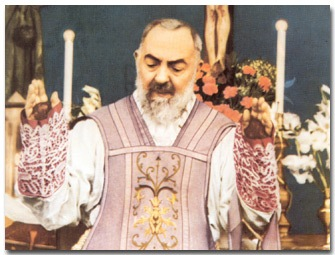
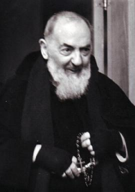
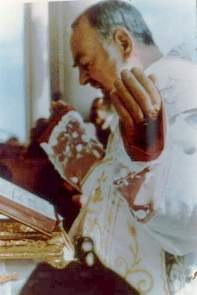
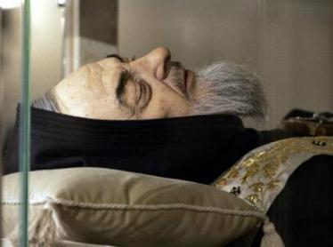
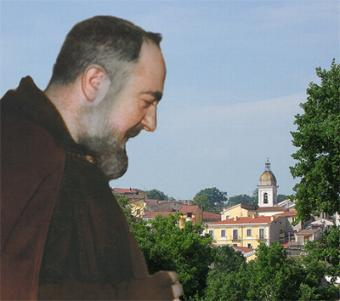
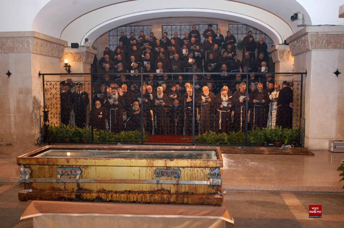

CINQUENTA ANOS DE PERSEGUIÇÕES
A virtude da fortaleza refulgiu vigorosamente no Padre Pio, e ele bem cedo, compreendeu
que o seu caminho haveria de ser o da Cruz, e logo o aceitou com coragem e por amor
a 
Quando o seu serviço sacerdotal esteve submetido a investigações, frente a acusações injustificáveis e a impressionantes e cruéis calúnias, permaneceu calado, sempre confiando no julgamento de DEUS, através de seus superiores diretos e de sua própria consciência. Foi obediente em tudo às ordens recebidas, mesmo quando eram gravosas. E no meio de toda a admiração do mundo, ele repetia: «Quero ser apenas um pobre frade que reza».
OS IRMÃOS DO CLERO
As perseguições que ele sofreu, foram intensas e orquestradas essencialmente com base na antipatia pessoal, na abominável inveja e no desprezível ciúme, que se transformaram em ódio e na sistemática obstrução ao seu benéfico e eficaz apostolado. Para atingi-lo, utilizaram de todos os meios ilícitos: como acusações infames e mentirosas, calúnias cruéis e horrorosas e violências morais querendo ferir sua honra e seus votos solenes.
Desde a sua chegada a San Giovanni Rotondo encontrou uma feroz hostilidade no ambiente religioso, porque o seu interesse pelas coisas sagradas e a intensidade de sua atividade apostólica, colidiu e incomodou a frouxidão e a vergonhosa negligência do clero local. A população estava embrutecida pelo duro trabalho do campo e primordialmente, pela intensa propaganda comunista e o mau exemplo dos padres.
A direção do Seminário, assim como a direção espiritual dos estudantes, foi confiada ao Padre Pio, que acompanhava dedicadamente os jovens nas orações, no aconselhamento, assim como se dedicava a receber e acolher, as visitas que chegavam ao Mosteiro, manifestando disponibilidade e uma preciosa atenção a todos. Promoveu obras de caridade, incitou grupos de mulheres ao cultivo da oração e rezava diariamente o Terço com a comunidade.
A transformação aconteceu de tal forma, que nos últimos meses de 1916, as suas atividades apostólicas haviam aberto um novo horizonte para todas as famílias, com uma concreta esperança de continua e edificante atuação da Igreja no seio da comunidade e do povo em geral.
Mas, com o esplendor luzidio das primeiras esperanças, brotaram também as abomináveis preocupações. Um grupo de Cônegos da aldeia, habituados a uma vida corrupta ficaram incomodados com a atuação do Padre Pio. Era ainda motivo de irritação dos Cônegos, o fato do Padre no confessionário, reconduzir muitas pessoas ao caminho certo, com uma sincera conversão do coração, inclusive convertendo muitas mulheres que estavam sempre a disposição como amantes dos Cônegos.
Em consequência desta realidade, o aborrecimento e a antipatia do clero se transformou em aversão e ódio contra o Santo Frade.
Os Padres da localidade eram na maioria homens trabalhadores e preocupados com sua função sacerdotal, mas eram também comandados pelos Cônegos, que eram ovelhas negras, completamente rebeldes as normas da moral e da justiça. Assim, logo depois que o Padre Pio recebeu as chagas do SENHOR, que produziu um imenso e notável crescimento no fervor religioso do povo, a inveja e o ciúme cresceram muito mais e transbordaram no lado do clero, levando-os a criar um forte movimento para afastar e transferir o Padre Pio para outro lugar. Este foi o primeiro ato de agressão contra ele.
O TERRÍVEL ARCEBISPO PASQUALE GAGLIARDI

Fazendo uso de sua autoridade eclesiástica, enganou o Santo Ofício com denúncias falsas e infames contra o Santo Frade, induzindo o supremo órgão da Igreja a tomar providências severas e injustas contra o inocente Padre Pio.
Em Roma, os Cardeais favoráveis ao Padre eram muitos, inclusive o próprio Papa Bento XV, mas infelizmente o Prefeito da Congregação Consistorial, o Cardeal Gaetano de Lai, era amigo de Gagliardi desde a infância, e era em suas mãos que chegavam todas as denúncias preparadas e orquestradas pelos inimigos do Padre. O terrível Arcebispo Gagliardi chegou ao absurdo de dizer que os estigmas do Padre Pio “foram forjados e eram frutos de mistificações e fanatismo, produzidos por automutilação, com prejuízo da seriedade da nossa religião”. E encerra o relatório dizendo: “Ou sai o Padre Pio de minha Diocese ou sai o Bispo”. Como se vê, ele articulava e tramava violentamente contra o humilde Padre Pio, uma verdadeira guerra satânica.
O Santo Frade continuava o seu apostolado em silêncio, vivendo humildemente, com absoluta obediência a Vontade de DEUS, jamais reagindo aos seus caluniadores e inimigos que queriam destruí-lo. Mas na verdade, a sua "Via Crucis" ainda tinha um longo caminho a ser percorrido.
O ABOMINÁVEL PADRE GEMELLI
Em Abril de 1920, o Arcebispo Galiardi ganhou um poderoso aliado na pessoa do Padre Agostino Gemelli, que estudava os fenômenos psicológicos e tinha algum conceito no meio científico. Ele viajou a San Giovanni Rotondo para ver as chagas do Padre Pio. Entretanto como não levou a necessária autorização, o Santo não quis mostrá-las, e por isso, Gemelli sentindo-se ofendido com a negativa, tornou-se seu inimigo!
O despeitado e vaidoso Padre Gemelli, nos seus artigos e publicações, lançou dúvidas sobre os estigmatizados, atingindo São Francisco de Assis, alcançando a Santa Gema Galgani cujo processo de Beatificação estava em andamento e de tabela, lançou suspeita sobre as chagas do Padre Pio.
A Revista dos Padre Jesuítas “Civiltá Cattolica” tomou a defesa dos estigmatizados e rebateu as teorias absurdas do Padre Gemelli. Mas o Gemelli já tinha amigos no Santo Oficio, inclusive algumas autoridades simpatizavam com ele e acreditavam nas suas “elucubrações”. Então, formou-se o binômio terrível “Gagliardi-Gemelli”, que foi o responsável direto pelas dolorosas medidas disciplinares que foram impostas pelo Santo Ofício, contra o Padre Pio.
OS CÔNEGOS QUERIAM O DINHEIRO DO HOSPITAL
Por outro lado, aquele pessoal ganancioso, que ambicionava uma participação no manejo de tanto dinheiro que chegava para a obra do novo Hospital, a «Casa Sollievo della Sofferenza» (Casa do Alívio do Sofrimento), o qual estava sendo manipulado idoneamente por poucos e honestos administradores da inteira confiança do Padre Pio, eles se aproveitaram dos acontecimentos do momento para apertar o cerco contra o Padre Pio e os administradores da obra.
Então recomeçou uma torrencial chuva de denúncias todas caluniosas e diabolicamente preparadas, que foram encaminhadas à Cúria Geral dos Capuchinhos em Roma, todas elas, destinadas a denegrir a imagem dos atuais administradores da obra, qualificando-os de incapazes e aproveitadores.
Em consequência, a Direção Geral da Ordem, teve que enviar inspetores, que realizaram visitas de verificação e prepararam dezenas de inquéritos, a fim de apurar todas as denúncias. Na verdade, nunca existiu qualquer irregularidade na obra e, embora os Superiores da Ordem estivessem absolutamente certos da idoneidade e santidade do Padre Pio e da correta escolha dos administradores do empreendimento, por força das denúncias arquitetadas, conscientemente eram obrigados a apurar e apresentar os resultados, mesmo que no final nada ficasse provado, como no caso aconteceu, considerando que de fato e de direito, nada existia que desabonasse a conduta do Padre e dos administradores da obra. Concluídos os inquéritos ficou em evidência a mentira das acusações e a maldade daqueles que agiram contra o Santo Frade.
AS MULHERES VAIDOSAS E MENTIROSAS
Existiu
também o caso das mulheres vaidosas, que dentro da comunidade estavam se sentindo
legadas a um plano inferior pelo Padre, e por isso, andavam 
Sobre o assunto, nada foi provado, ao contrário, ficou provado sim que aquelas mulheres demonstravam uma incandescente capacidade de viver mentindo e inventando estórias absurdas e covardes, somente igualadas aos feitos daquele que é considerado o “pai da mentira” (satanás).
O GRAVADOR NO CONFESSIONÁRIO
Mas os inimigos, os caluniadores e ambiciosos, constituíam um grupo grande e eram verdadeiros facínoras, que não desistiam facilmente, eles queriam mesmo “colocar” uma culpa no Padre, queriam encontrar qualquer coisa que pudesse incriminá-lo, para afastá-lo do controle da Obra do Hospital e reduzi-lo a um isolamento total. Por essa razão, projetaram um teste violento e sacrílego, chegando ao absurdo de colocar aparelhos de gravação na cela do Padre, no refeitório e principalmente no confessionário. Um crime hediondo contra o direito, a justiça, o amor e a liberdade. Foi uma arrumação com todos os ingredientes do maligno, para captar todas as conversas do Padre e “descobrir algo que o incriminasse”. Não descobriram nada, e aquela vergonha veio à tona, embora os “artistas” trabalhassem ligeiro e tentassem apagar ou ocultar o escândalo, a verdade é que o acontecimento inundou de lama diversos setores da Igreja.
A PESADA MÃO DO SANTO OFÍCIO
E apesar de tudo isto, por incrível que possa parecer, aquelas abomináveis calúnias e todas as denúncias feitas contra o Padre Pio, muito embora mentirosas e inventadas, sem qualquer prova ou evidência, mesmo assim, foram acolhidas pelas mãos criminosas dos inimigos que estavam no Santo Oficio, os quais souberam trabalhar com “eficiência” todo aquele material. O Prefeito da Congregação Consistorial, como já se disse, era o Cardeal Gaetano de Lai, amigo de infância do Arcebispo Gagliardi, e que, também simpatizava com as idéias e teorias do Padre Gemelli. O resultado não podia ser diferente, foi direcionada sobre o Padre Pio de Pietrelcina uma abominável carga condenatória que o proibia praticamente até de exercer o seu ministério sacerdotal, porque não podia receber confissões, rezar com os fieis na Igreja, receber romeiros e muito mais. Foram tantas as condenações, que até foi forçado a interromper o seu benéfico e eficaz apostolado, sendo proibido até de celebrar a Santa Missa em público, em qualquer Igreja, só podendo celebrar na Capela do Convento. Dessa forma, os inimigos do direito e da justiça conseguiram com mentiras escandalosas e calúnias, encarcerar, isolar, escorraçar com pesadas repreensões, com diversas notificações, deliberações e decretos do Santo Oficio, o humilde Frade, chegando ao máximo de negar o caráter sobrenatural das suas chagas, assim como, reprovar e punir sua conduta de vida, que era ilibada, cristalina e franciscana.
Os amigos do Padre Pio inconformados com aquela situação, na continuidade dos meses procuraram contato com as autoridades do Vaticano, com aqueles Cardeais que eram amigos e admiradores do Santo Frade. E desse modo, os fatos chegaram ao conhecimento dos Cardeais que estavam mais próximos ao Papa, e assim, eles ficaram sabendo das terríveis punições impostas ao Padre Pio pelo Santo Oficio. Logo levaram as notícias ao Papa Pio XII, que ficou muito nervoso e aborrecido com aquele procedimento, que nem tinha sido submetido a sua anuência. Imediatamente ordenou que a condenação fosse amenizada e fosse instalada com urgência, uma profunda verificação em todos os procedimentos do Santo Oficio em relação ao Santo Frade.
DOENÇA E MORTE.

No dia 20 de Fevereiro de 1971, apenas três anos após a sua morte, o Papa Paulo VI, dirigindo-se aos Superiores da Ordem dos Capuchinhos, disse: «Olhai a fama que ele alcançou, quantos devotos do mundo inteiro se reúnem ao seu redor! Mas por quê? Por ser talvez um filósofo? Por ser um sábio? Por ter muitos meios à sua disposição? Não! Porque celebrava a Santa Missa humildemente, confessava de manhã até a noite e era a própria imagem impressa dos estigmas de NOSSO SENHOR. Era um homem de oração e de sofrimento».
Já gozava de larga fama de santidade durante a sua vida, devido às suas virtudes, ao seu espírito de oração, de sacrifício e de dedicação total ao bem das almas.
Nos anos que se seguiram à sua morte, a fama de santidade e de milagres foi crescendo cada vez mais, tornando-se um fenômeno eclesial, espalhado por todo o mundo e em todas as categorias de pessoas.
BEATIFICAÇÃO E CANONIZAÇÃO
Assim DEUS manifestava à Igreja a vontade de glorificar na terra o seu Servo fiel. Não tinha ainda passado muito tempo quando a Ordem dos Frades Menores Capuchinhos empreendeu os passos previstos na lei canônica para dar início à Causa de beatificação e canonização. Depois de tudo examinado, como manda o Motu proprio «Sanctitas Clarior», a Santa Sé concedeu o nihil obstat no dia 29 de Novembro de 1982. Assim, o Arcebispado local pode proceder à introdução da Causa e à celebração do processo de averiguação (1983-1990). No dia 7 de Dezembro de 1990, a Congregação das Causas dos Santos reconheceu a sua validade jurídica. Ultimada a Positio, discutiu-se, como é costume, se o Servo de DEUS tinha exercitado as virtudes em grau heróico. No dia 13 de Junho de 1997, realizou-se o Congresso Peculiar dos Consultores Teólogos, com resultado positivo. Na Sessão Ordinária de 21 de Outubro seguinte, tendo como Ponente da Causa o Ex.mo e Rev.mo D. Andrea Maria Erba, Bispo de Velletri-Segni, os Cardeais e Bispos reconheceram que o Padre Pio de Pietrelcina exercitou em grau heróico as virtudes teologais, cardeais e anexas.

Mas os inimigos do Padre Pio, gente invejosa e enciumada, continuaram a trabalhar contra ele, impedindo o livre caminhamento do processo que atestava a sua admirável santidade, dificultando a organização da documentação necessária ao reconhecimento oficial das virtudes heróicas do Padre, assim como, a legítima apuração dos fatos que testemunhavam a sua intercessão milagrosa junto a DEUS.Mas as boas e honestas almas também sempre existiram, e quando sentiam ou observavam qualquer interferência maléfica em alguma área, propositalmente desviavam o processo para setores mais competentes e equilibrados. E por isso, aconteceram algumas demoras, mas mesmo assim, todos os processos puderam caminhar sadiamente e tiveram um desfecho natural e correto.
No dia 18 de Dezembro de 1997, na presença do Papa João Paulo II foi promulgado o Decreto sobre a heroicidade das virtudes. Para a beatificação do Padre Pio, a Postulação apresentou ao Dicastério competente a cura da senhora Consiglia de Martino, de Salerno. Sobre o caso desenrolou-se o Processo canônico regular no Tribunal Eclesiástico da Arquidiocese de Salerno-Campanha-Acerno, desde Julho de 1996 até Junho de 1997. Na Congregação das Causas dos Santos, realizou-se, no dia 30 de Abril de 1998, o exame da Consulta Médica e, no dia 22 de Junho do mesmo ano, o Congresso Peculiar dos Consultores Teólogos. No dia 20 de Outubro seguinte, reuniu-se no Vaticano a Congregação Ordinária dos Cardeais e Bispos, membros do Dicastério, e, no dia 21 de Dezembro de 1998, foi promulgado, na presença do Papa João Paulo II, o Decreto sobre o milagre.
No dia 2 de Maio de 1999, durante uma solene Celebração Eucarística na Praça de São Pedro, Sua Santidade João Paulo II, com sua autoridade apostólica, declarou BEATO o Venerável Servo de DEUS Pio de Pietrelcina, estabelecendo no dia 23 de Setembro a data da sua festa litúrgica.
Para a canonização do Beato Pio de Pietrelcina, a Postulação apresentou ao competente Dicastério o restabelecimento do pequeno Matteo Pio Collela de São Giovanni Rotondo. Sobre este caso foi elaborado um processo canônico no Tribunal Eclesiástico da Arquidiocese de Manfredonia-Vieste, que decorreu de 11 de Junho a 17 de Outubro de 2000. No dia 23 de Outubro de 2000, a documentação foi entregue à Congregação das Causas dos Santos. No dia 22 de Novembro de 2001 é aprovado, na Congregação das Causas dos Santos, o exame da Consulta Médica. No dia 11 de Dezembro de 2001, é julgado pelo Congresso Peculiar dos Consultores Teólogos e, no dia 18 do mesmo mês, pela Sessão Ordinária dos Cardeais e Bispos. No dia 20 de Dezembro, na presença do Papa João Paulo II, foi promulgado o Decreto sobre o milagre; no dia 26 de Fevereiro de 2002, foi publicado o Decreto sobre a sua canonização.
No dia 16 de Junho de 2002, durante uma solene Celebração Eucarística na Praça de São Pedro, Sua Santidade o Papa João Paulo II, com sua autoridade apostólica, declarou SANTO o Servo de DEUS Pio de Pietrelcina.
=ÚLTIMA HOMENAGEM=
